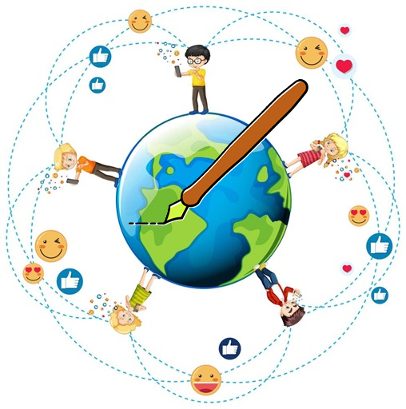

Inicio
Explorar
Concursos
Login
Perfil
Estadísticas
Moderación
StoryUp/Seguidores
Español
English
Deutsch
🌍👦🏽👧🏻👨🏿👩🏼✒️
StoryUp
La red social juvenil donde cada historia importa
Únete ahora
Si eres Director/Docente, accede como moderador:
Acceso para moderadores
¿Qué puedes hacer en StoryUp?
✍️ Publica historias reales, ficticias o confesiones
🌍 Explora relatos de jóvenes de todo el mundo
🗣️ Elige tu idioma y traduce historias automáticamente
📱 Disponible como app móvil y web
🛡️ Moderación educativa para entornos escolares

Explora sin registrarte
Lee historias destacadas en nuestra
vista pública
Impacto global
+1200 historias publicadas
+300 usuarios activos
+15 idiomas representados